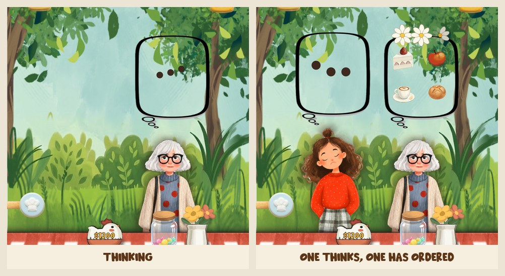
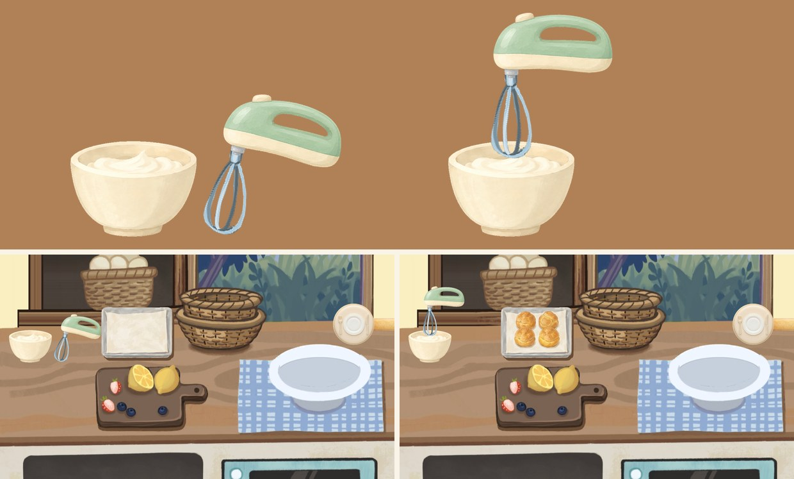
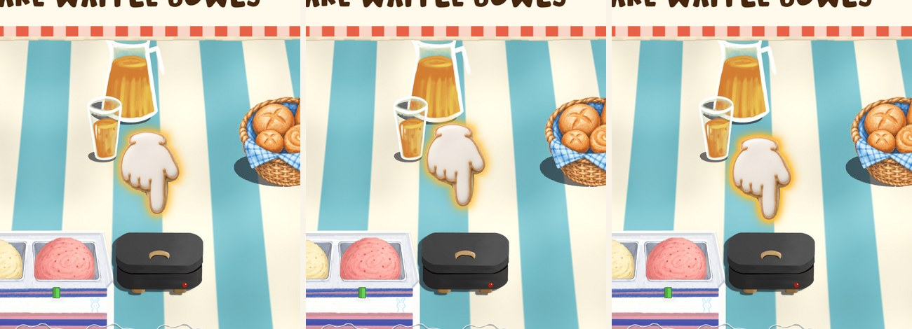
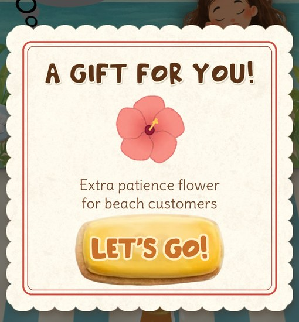

Food Truck Cafe
21 November. 2026.11.20 is live on the App Store; the next test build waits on the Xcode sign-in.
1Next
You
Test build 2026.11.21 (0) is being made now. If the upload is refused again, it needs your sign-in in Xcode (Settings, Accounts); I will say so here.
Look at the thinking dots and the mixer (Current); both are in the build as shown.
Still open: the chapter 2 ideas (Q&A).
Me
In the build today: chapter 2 gift, hand pointer with its glow, tray shadow, lean handheld mixer, kitchen without pauses, faster blender, smaller thinking dots.
Tomorrow (22 Nov): Apple's sales for 21 Nov (a Remove Ads sale?), and whether today's US player came back.
2Q&A
No between-days ads: was that player me, since TestFlight does not ask for ads? (21 Nov)
- No, I am fairly sure it was not you. The game makes one check, "TestFlight or App Store copy?", and uses it for both things: a TestFlight copy skips the ads and sends its data to the test set. That play arrived in the App Store set, so the game on that phone was the App Store copy, where ads are not skipped.
- Your own play is recorded separately in the test set: your iPhone, today 12:09 to 12:16, days 13 and 14, one star each.
- The other play was a brand-new game: the tutorial from its first step, then days 1 to 14 in order, 3 stars on every one, 11:29 to 12:01. It ended 8 minutes before yours began.
- The one way it could be you: if you also played a new game from the tutorial to day 14 in that half hour on the App Store copy (another device, or after deleting the game). If you did not, it is a real player.
Why was no between-days ad shown to that player? (21 Nov)
- Their phone never asked Unity for an ad. Unity's hourly report shows 0 ad requests in the two hours they played (11:00 to 13:00 our time). Every other player's visit today shows 1 to 4 requests.
- It is not Remove Ads: with Remove Ads the game still loads an ad in the background, so a request would show.
- Most likely the phone blocks ad servers (an ad blocker, a private DNS or a VPN). The game then simply goes on without ads.
- Not a fault of the new release: another player on the same version was shown an ad today.
Does a skipped between-days ad still count at Unity? (21 Nov)
- Yes. Unity counts an ad as shown the moment it starts. Skipping it, or even closing the game during it, does not take it back.
- Income: most ads pay per showing, so a skipped ad usually still earns. Some advertisers pay only when the player taps or installs; those earn nothing when skipped.
- Seen in today's numbers: Unity counted 4 ads shown, the game logged none as finished. At least two were players who closed the game during the ad right after day 1.
Chapter 2 is much harder: ways to tune it (21 Nov)
- The data agrees. The player from Japan got mostly 3 stars in chapter 1; in chapter 2 they got 0 stars on day 13 and needed 2 to 5 tries on each of days 15 to 19. All 11 of their restarts were in chapter 2. Your own test today: one star on day 13 and on day 14. (Today's US player got 3 stars on both, so it can be done, but not by most.)
- Why: customers come at the same pace as chapter 1, but an ice cream is up to four taps, and the scoops and waffle bowls run out fast (4 scoops a well), so the kitchen trips pile up.
Ideas (tick any; my pick is 1, 2 and 3: make the ice cream lighter, leave the customers alone):
What are "Header" and "Search Results" on the release page? They are empty for our game.
- They are new, optional slots from Apple ("creative assets", shown from iOS 27): a picture or short looping video at the very top of our store page (Header), and a picture shown beside the game in search (Search Results).
- Empty is fine: the page looks as it does now, and search keeps showing our video and screenshots. Nothing is missing from the release.
- They are a chance to look better: one clear picture of the truck and the table, no prices, readable small. Apple gives templates with safe areas. They go through review like screenshots.
The sale price of each item
- Chapter 1: coffee $10, bread $15, apple $20, juice $20, cookies $30, strawberry cake $35 a slice, choux $35.
- Chapter 2: coconut $30, ice cream $15 per scoop (a three-scoop glass is $45).
- Plus a tip: price × seconds left on the order × 10 % (some customers tip more). A $30 order served with 6 seconds left pays $18 in tips.
- A replayed day pays only part of this (unchanged).
The time for each item after the kitchen redesign (21 Nov)
- Bread: 5 s in the oven.
- Cookies: 3 s in the oven.
- Choux: about 9 s from the oven tap to the table: oven 3 s, mixer 2.5 s, fruit board 2 s, shown finished 0.9 s, flight 0.6 s. No taps after the oven.
- Strawberry cake: the same, about 9 s.
- Choux and cake share the mixer and the board: if both are cooking, the second waits its turn (up to 2.5 s more).
- Apples and coconuts: back 8 s after the last one is picked.
- Ice cream blender: 3 s with four flavours, 1.8 s with two.
- Waffle machine: about 2.4 s.
- Coffee bags, juice: at once.
- With the Kitchen upgrade (15 stars) all of it is a quarter shorter: bread 3.8 s, cookies 2.3 s, choux and cake about 7 s.
3Current
Made 21 November; all of it is in the new test build.
Thinking dots: smaller, and centred in every bubble.

- The dots are now sized from the bubble itself: the row of three is about half as wide as the bubble's inside, in every bubble. In the large bubble they are a little smaller than before; tick if you want them bigger.
- They sit in the middle of the bubble's inside (before, in the middle of the foods to come, which is off-centre in some bubbles).
Mixer: lean body, your own whisk as the blade.

- Body (ChatGPT): a slim curved body with a thin handle, shorter than the bowl is wide.
- Blade: the kitchen's own whisk, its pixels only turned and made smaller; its handle sits up inside the body.
- At rest it stands beside the bowl the same way up, leaning 12 degrees; running it is level over the bowl.
- In iCloud ("FoodTruckCafe art"): mixer_bowl, mixer_machine (body alone), mixer_machine_with_whisk, mixer_original_whisk (the kitchen's whisk), plus the two game frames mixer_rest and mixer_running.
Built from your picks: the hand pointer with its glaze glow; the gift card's new words.


- Pointer: Gemini's hand cookie (drawn again large), a gold glow that beats, and a band of light that passes over the icing every second and a half. Every tutorial arrow is this hand now, the kitchen swipe hints too.
4MVP
Next release: the kitchen remodel and the small fixes. Everything changed since release 2026.11.20:
- Kitchen flow: choux and cake are made in steps. The oven bakes them onto the baking tray or the cake plate in the kitchen, the mixer adds the cream, the fruit board adds the fruit, then they fly to the table. The kitchen does every step by itself, with no pause.
- New kitchen pieces: the baking tray (four choux, two by two, four stages, with a shadow), the cake plate's stages (empty, sponge, cream, finished), the lean handheld mixer with its bowl and the kitchen's whisk as its blade (at rest and running). All can be arranged; the tray starts on the kitchen table.
- Kitchen times: bread bakes 5 s; choux, cake and cookies 3 s. The ice cream blender runs 3 s (1.8 s with two flavours). Pausing the game stops the kitchen too.
- Chapter 2 opens after day 9 of chapter 1 (the player chooses when to go). On the map day 9 is a big glowing star with a dotted path to the arrow; finishing it gives a star and the truck drives to chapter 2.
- Chapter 2 gift: a fourth patience flower for every chapter 2 customer; in the tutorial a reward card shows it and it flies to the first customer.
- Map: today's day card opens by itself.
- Customers: they think for 2 s (three dots in the middle of the bubble) before the order shows.
- Tutorial: the pointer is a hand cookie with a gold glaze glow.
- Shop: NEW on a tab that holds something new; locked items stay visible with a padlock (cookies and coconut until chapter 2, the star Yoga until she is hired); two new locked star cards, Chef (20) and Dining table (25); cards aligned; the extra cup reads "One more plate for brewed coffee."
- Look: a taller hen on the table; the tutorial's "Ready to go?" card on paper with cookie buttons.
Not in yet: the chapter 2 tuning (your picks); the cutting animation (the board hops for now); a sound for the day 9 scene.
5Backlog
Nothing open.
6Analysis
Players, 19 to 21 November (since the last read; times UTC).
- 11 new players (Philippines 3, Indonesia 2, Germany 2, US 2, Malaysia, UK). Opened 11, started the tutorial 10, finished it 7, finished day 1: 6, day 2: 3, day 3 or later: 2.
- Today's best player (US, played today 21 Nov, 11:29 to 12:01 our time, on game version 2026.11.20 from the App Store): days 1 to 14 in one sitting, 3 stars on every day, 24 purchases, chapter 2 opened and its tutorial done. No ad was shown in 14 day ends: their phone never asked Unity for one (see Q&A).
- Day 1 now gives one star to most new players. Since the star rule changed (stars by customers served, live 18 Nov), 4 of 8 first tries at day 1 ended with 1 star; before, everyone got 3. Three of those four quit within two minutes and did not return; the fourth got 0 stars on day 2 and left.
- The stars do bring replays: one player (Indonesia) came back three times and replayed day 4 six times until it showed 3 stars; reached day 6, 9 purchases.
- Japan's player finished chapter 1 and reached day 20 on 19 Nov; chapter 2 took many tries (see Q&A).
- Came back: two players from last week returned after 5 and 8 days; one finished day 1, one closed 30 s into it.
- Left in the tutorial: at step 1, step 3 and step 6 (one each); one only opened the game.
- Ads: between-days ads 3 watched, 2 skipped; two more players watched a Daily Treats ad before the tutorial. Unity Ads 14 to 20 Nov: $0.51 from 88 ads shown. Today so far: 20 requests, 4 shown, $0.05.
- Quitting in the first ad: at least two players today closed the game during the ad right after day 1 and did not return. The game only logs an ad when it ends, so these were invisible until I compared with Unity's hours.
- Downloads (Apple, first time), 14 to 20 Nov: 69 (15, 10, 14, 3, 7, 13, 7). Apple's 19th arrived a day late; the page is up to date again.
- Left out: Apple's review run of 2026.11.20.
My suggestion: make 3 stars easy on days 1 and 2 (more patience on those two days), so a first-time player does not start with one star.
7Marketing
Nothing open.